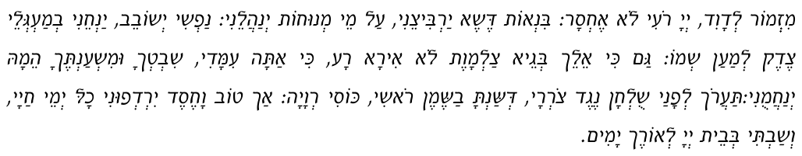
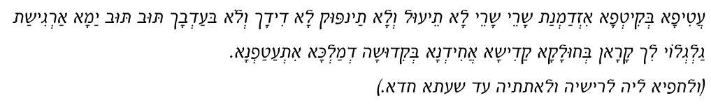

It is imperative for the husband to be fully aware of his wife’s emotional needs. He must make special efforts to be supportive and considerate on the evening of her immersion. Each couple has its own way of relating. For some, sharing a cup of coffee and talking suffices. Others may prefer to learn a subject in Torah together. It is important for the husband to verbally express his affection for her to create an atmosphere of intimacy.
Relations
Generally speaking, there exists a difference between the male and female perception of physical relations. The word ‘generally’ should be emphasized, since each individual is unique. Interrelationships within couples vary and there may be cultural influences involved, as well.
Most women expect and need emotional support prior to, during, and following physical relations to a greater extent than men.
Each couple finds its own way of intercommunication. However, one should be especially considerate following the immersion. The husband should be compliant should his wife desire that he escort her from the . Of course, he should be careful that his presence does not cause discomfort to other women leaving the mikveh.
Endearment should be translated into terms appropriate to his wife’s personality. For some, expressing interest in their work is important. For others, sharing their difficulties regarding household problems is important. For yet others, interest in their health, compliments on cooking, or appearance are all areas in which the husband’s concerns evokes the wife’s love for him. He should, according to his knowledge of his wife’s personality, be extra attentive to these things on the night of the mikveh.
Remember, she has been waiting for this night too and, as a woman, has her emotional expectations and needs. Consideration of these needs are an integral part of the role of a Jewish husband.
Obligatory Night
In light of the above, the translation of (עונה) “time when relations are obligatory” adopts an expanded meaning. This night the husband’s role is not completed with marital relations, but more than this, he is to show extra consideration and affection, as well. He should realize that she also has her needs and he has an obligation to satisfy them to the greatest extent possible.
Following Relations
In this spirit, it is clear that to avoid seeming callous and self-centered, the husband should refrain from separating from his wife immediately following relations, but rather extend the feelings of intimacy.
Acting in a holy manner during intimate relations, the parents draw down refined trappings for the soul of their future offspring.
Tanya, Chapter Two
General Overview
This chapter deals with a very personal aspect of human interaction, hopefully to provide a clearer understanding and appreciation of this very important subject.
Judaism has a positive attitude towards marital relations, and views them in tune with our overall purpose as a holy nation.
It was not for nothing that King Solomon, the wisest of all men, chose the analogy of lovers to express the relationship of Hashem and the Jewish people in the “Song of Songs.” In Kabbalah and other Jewish literature, it is likewise used as an analogy of the dynamics of creative spiritual forces.
A couple who have marital relations during permitted times, with the appropriate intentions, merit to feel the Divine Presence between them. Rabbi Yakov Emden1Author of Siddur Beis Yakov 1695-1776. wrote: “When the husband and wife act fittingly during marital relations there is no act more sacred, wholesome, and pure2Siddur Beis Yakov Hanhagos Leil Shabbos 3:3. Poskim..”
Judaism does not preach evading physical pleasure during relations with one’s wife. Rather, the Torah requires one to focus and direct oneself while engaged in marital relations, not to remove oneself from natural feelings, but rather to channel them in a positive and productive way. In fact, “when the marital act is not performed with love, affection, and desire, the Divine Presence is not drawn down3Igeres Hakodesh LeRambam Chapter 2.,” as will be explained.
Interestingly, on Friday night, the culmination of and most significant time of the Jewish week, our sages encouraged marital relations. The reason for this is elusive at first glance. One might have thought that after an entire week of dealing with worldly affairs, Kabbolas Shabbos prayers in synagogue, kiddush, and the traditional Shabbos meal, we would be directed to study Torah, something conspicuously spiritual. Yet, we see that on this night, the sages encouraged man and wife to join in marital relations—not as a diversion from the spiritual nature of Shabbos, but rather infused with the same spirit4Siddur Beis Yakov Hanhagos Leil Shabbos 1:2..
In fact, the Al-mighty bestows His name on marital relations. When a man and woman combine in holiness and purity the Divine Presence dwells between them. The Divine Presence is called yud heh יה. The yud י is drawn from the man איש, whereas the heh ה from the woman אשה resulting in the drawing down of the Divine Presence יה during relations5Siddur Beis Yakov Hanhagos Leil Shabbos, Igeres Hakodesh LeRambam Chapter 2. The Almighty enclosed these parts of Himself in the parents, enabling them to reveal the Omnipresent during relations.. The Divine Name is present in order to bring with it the soul (neshamoh) of the future child, as it says: “three partners are active in the formation of every child—the father, the mother, and the Holy One, blessed be He6Niddah 31:1..“
Power of Thought on the Offspring
Traditional Jewish sources assert that there is a direct influence of the thoughts and spiritual atmosphere between husband and wife on their seed and their offspring. Therefore, one should contemplate holy thoughts and envision righteous men during marital relations7Siddur Beis Yakov Hanhagos Leil Shabbos 6:9. See there discussion at length., since those thoughts will have an effect on the seed and create praiseworthy children8See the end of the second chapter of Tanya..
The Talmud9Berachos 20:a. relates how Rabbi Yohanan, known as one of the most handsome (and righteous) men of his generation, used to sit outside the gates facing the mikveh. When asked to explain his behavior he replied, “in order that the women should see me upon leaving the mikveh and they should (likewise) have beautiful children10Additionally, this precludes meeting an impure animal first upon leaving the mikveh (as explained in Chapter Ten), Sidrei Tahara 198:9..” As a result, when they engaged in relations with their husbands, they would afterwards bear offspring with similar traits11Conversely, the story is related of a black child being born to a white couple, arousing the husband’s suspicion. After investigation, it was found that there was a picture of a black person in the room, which the wife saw and remained in her mind during relations. Her thoughts caused the color of the child to be unlike theirs, Siddur Beis Yakov Hanhagos Leil Shabbos 6:11..
Spiritual Makeup
Not only the future offspring’s physical appearance is affected, but even more importantly, the spiritual makeup. The Tanya12Main text of Chabad thought. Written by Rabbi Shneur Zalman, the “Alter Rebbe” 5505-5573 (1745-1812). clearly expresses this: “Acting in a holy manner during relations, the parents draw down refined trappings for the soul of their future offspring13End of second chapter, based on the Zohar Chodosh..”
The child formed from seed created through warmth will inherit the qualities of devotion and love and then manifest them in his/her personality. This warmth of soul results in alacrity of spirit and sharpness of mind in the child14Siddur Beis Yakov Hanhagos Leil Shabbos 6:10. Intellect being an offshoot of emotion, Tanya Chapter 4..
If his thoughts are filled with his wife’s well being, love for her, and thoughts of Torah wisdom, those thoughts will be enveloped and transferred into the father’s semen and have the power to affect the future child15Will affect the “garments” of the future child’s soul, Siddur Beis Yakov Hanhagos Leil Shabbos.. Therefore, the quality of the future child’s personality is dependent upon the sincere love and devotion between man and wife during marital relations.
Conversely, if their thoughts are on mundane matters during relations, the seed which is created from those thoughts will form offspring in the same vein.
For these reasons, it is vital to know how to conduct relations in the appropriate manner.
Intentions—kavanahs
In general, intentions are divided into four16Siddur Beis Yakov Hanhagos Leil Shabbos.:
- The most proper intention is simply for the purpose of fulfilling the biblical injunction to “Be fruitful and multiply.”
- Another intention is to benefit the unborn child. Relations during the last six months of pregnancy are healthy for the infant: “causing it to become ‘fair’ and healthy17According to the literal translation, “white and energetic.”.” Relations with this in mind are likened to the intention above, since here too the father’s goal is for the child’s benefit.
- When the husband recognizes through his wife’s behavior her desire for his attention. (This has the same merit as the above.) So too when he is leaving on a trip, it is very likely that she desires his intimacy.
- When the husband initiates relations for his own release in order not to spill seed. This also is considered a praiseworthy motivation, but it is the least of the four.
Friday Night
Friday night is a time specially set aside for (Talmidei Chochomim) to engage in marital relations. Semen is created from the most refined levels of the blood. The blood is drawn from all the various parts of the body and therefore a weakening effect occurs in the body when the semen is emitted.
However, at the end of the seven days of creation, when all of creation is renewed, man’s body is included in this process and is capable of transmitting semen, while not being weakened by it. It can be likened to a burning candle not lacking any oil, since oil is being added from another side18Siddur Beis Yakov Hanhagos Leil Shabbos 4:2, see there discussion at length.. Another reason for the time is that it is a spiritual day not like any other and it is fitting that the souls of future children be drawn down on such an auspicious day19Siddur Beis Yakov Hanhagos Leil Shabbos ..
Clothing
Both undress20In literal fulfillment of, “and he shall cleave to his wife and they will become one flesh,” Genesis 2:24. This also displays and increases the affection between them. while under the covers, their bodies remaining covered by a sheet at all times21Shulchan Aruch Admur Hazoken 2:1..
It is preferable for them both to be completely undressed22Even Haezer 76:13. Mishnah Beruroh 240:36. Including tzitzis, Darchei Tahara page 206, see differing opinion in Siddur Beis Yakov Hanhagos Leil Shabbos 3:3, Darchei Tahara Chapter 22, in the name of the mekubolim. however, the husband should keep his yarmulke on, and the wife should attempt to keep her hair covering on, if easily possible.
Before and during relations, it is important for the husband to appease his wife with hugging and kissing and in other ways. The husband is responsible to set the intimate tone, soothing and comforting his wife, speaking to her heart to arouse a yearning toward him. Unity cannot be without the intimate feelings of true devotion and sincere love for each other. Their future children will then inherit this warmth and develop into warm G-d fearing Jews23Siddur Beis Yakov Hanhagos Leil Shabbos..
Preparations
It is customary for both the husband and wife to wash their hands three times alternatively24Siddur Tehilas Hashem end of Kriyas She’mah Ol Hamitah.. The husband then recites Mizmor LeDovid25Siddur Tehilas Hashem end of Kriyas She’mah Ol Hamitah, Be’er Hetev Orach Chaim 240:4, Psalms 23., and atifah bekitfah26Siddur Tehilas Hashem end of Kriyas She’mah Ol Hamitah. This paragraph proclaims the intention to maintain the sanctity of the relations. This will banish the force of evil known as “Lilith” who seeks to take the great spiritual energy of the emitted semen into the side of unholiness..
Psalm 2327In order to multiply, Siddur Tehilas Hashem the end of Kriyas She’mah Ol Hamitah. Possibly this Psalm proclaims confidence in bringing children into the world, although it is a difficult place, “I will not fear for the L-rd is my Shepherd....”

Translation
A psalm by David. The L-rd is my Shepherd, I shall lack nothing. He makes me lie down in green pastures. He leads me besides still waters. He revives my soul. He directs me in paths of righteousness for the sake of His Name. Even if I walk in the valley of the shadow of death, I will fear no evil, for You are with me. Your rod and Your staff—they will comfort me. You will prepare a table for me before my enemies. You have anointed my head with oil; my cup is full. Only goodness and kindness shall follow me all the days of my life, and I shall dwell in the house of the L-rd for many long years.
Atifah Bekitfah

Translation
“You who are wrapped in the bed sheets prepared [to take the wasted drops of semen]. Open your grasp! Open your grasp! Do not intrude on this union, and do not take out the drops. They are not yours or of your portion. Return! Return! The waves of the sea are calling you. I am cleaving to the side of holiness, encloaking myself in the sanctity of the Al-mighty.”
Digestion
Food undergoes a number of levels of digestion. Only from the fourth does it become transformed into blood or semen. The seed created during the time when the food is being digested is less refined. Therefore, one should wait until the food is completely digested, allowing the finer parts of the food to become semen28This time has been described as around midnight. However, due to the weak nature of people these days and the fact that waiting specifically till then could have more negative effects then positive, it is not suggested to wait, unless it is sure that there will be no undue discomforts. See Teshuvos Ubeorim Beshulchan Aruch letter 236..
Halachically Appropriate Positions
The most appropriate position is with the wife on her back with the husband lying on top. One explanation is that each should be facing the direction from which he/she was created29Zohar brought in Be’er Hetev 240:15.. Man was created from the ground, “G-d formed man out of the dust of the ground30Genesis 2:7.;” and she, “G-d built the rib that He had taken from man into a woman31Genesis 2:22..”
Their heads should be low and not raised high. He [or she] should draw her thighs upwards towards him32Siddur Beis Yakov Hanhagos Leil Shabbos 7:2:7..
He should remain engaged until he feels that no more drops of semen will be emitted33Preventing “spilling seed on the ground.” See Kitzur Shulchan Aruch Chapter 151.. Therefore, he should not depart from her while he still has an erection34Kaf Ha’Chaim 240:59 brought in Darchei Tahara Chapter 22.. An additional reason is that it is best for the wife to culminate first35See Magen Avrahom 240:21. Niddah 31:a. Marital relations should be performed with sincere modesty and humility and the couple’s voices should not be heard36Siddur Beis Yakov Hanhagos Leil Shabbos 7:2:3. This is one of four marital behaviors brought by Rabbi Yohanon ben Da’habai, see Nedarim 20:a. See explanation of these in Pischei Magidim page 493..
Undesirable Positions
The union between husband and wife parallels the union between the Creator and the Jewish people and has deep spiritual ramifications.
For this reason, the sages of the mystical tradition in particular, discouraged changing the position to the husband behind the wife37Even though in the normal place, nevertheless from behind is considered the “way of beasts." See Pischei Magidim page 494, Taharas Yisroel 240 par. 4:34 (182).. For the woman to be on top38Mehaber 240:5, considered brazenness. or their laying side by side39Mehaber 240:5, considered distorted. during intercourse is deemed immodest40Taharas Yisroel 240 paragraph 5:36.. Several other behaviors are likewise discouraged as immodest: having intercourse on the ground, while standing or sitting41Mehaber 240:15.. Kissing42Forbidden in accordance with the scriptural prohibition of ‘bal tishaksu,’ Mehaber 240:4. Considered as a factor in causing muteness in the future offspring. “The children are punished through the mouth (muteness) because the father transgressed through the mouth.”, or even looking at the wife’s private place is forbidden43Mehaber 240:4, considered as a factor in causing possible blindness in the future offspring. Here again the punishment (eyesight) in accordance with the transgression (looking). Furthermore he transgresses “...Walk modestly with the Al-mighty,” Micah 6:8..
Became Niddah During Relations
If the wife became niddah during intercourse, she must tell him immediately44Kitzur Shulchan Aruch 156:1.. In such a case: he ceases thrusting yet remains inserted. He ends bodily contact, elevating his body by raising himself on his arms and legs and presses his toes into the mattress. He should become full of fear because of the severe predicament in which he finds himself. He waits for his erection to disappear, separates, and behaves with her as a niddah45Mehaber, Ramo 185:4..
Note that the moment she announces her impure state they are forbidden to enjoy bodily pleasure. Therefore, he is not to withdraw at that point, since doing so with an erection involves pleasure. Rather, he should behave as explained above. She too is to cease movement46Chavas Da’as 185:8.. Even if she only thinks she has become niddah, in other words she has a doubt whether she felt running blood or was only feeling him, he is nonetheless not to exit immediately47Bodei Hashulchan 185:38.. Even if he wants to exit immediately, so that she does not become pregnant, nonetheless, he is to do as described above48Bodei Hashulchan 185:44.. If he did not have an erection at the time she said, “I have become niddah,” he is to withdraw and separate immediately49Bodei Hashulchan 185:39..
Regarding all of the above, to clarify a method of teshuva, an orthodox Rabbi expert in these laws should be consulted50Ramo 185:4, see commentaries there. Bodei Hashulchan 185:53..
Ensuring the Proper State of Mind
The Torah requires a couple to approach marital relations in a loving and harmonious frame of mind. Halacha details a number of situations in which relations are forbidden because these conditions are lacking:
- When there is hatred between them51Mehaber 240:3, 10..
- If the couple are in the midst of a quarrel, the husband should first appease his wife.
- Against the wife’s will. Rather, one should appease his wife before relations take place52Mehaber 240:10.. In this connection, our sages53Eruvim 100:b. brought an example of proper behavior from a rooster. Before mating, the rooster stretches forth its full feather covered wing and swoops it down to the ground before its mate seemingly as if to say, “I’ll buy you a full body coat which reaches down to the ground.”
- When either or both are drunk54Mehaber 240:3..
- From the moment he decided to divorce her55Mehaber 240:3..
- When he thinks about another woman56Mehaber 240:2, or vice versa Darchei Tahara..
- When his wife is sleeping.
- Relations during the day57Mehaber 240:11..
They shouldn’t speak of non-relevant matters or use foul language during relations.
After going to the toilet they should wait at least approximately nine minutes58Since the spirit (demon) of the bathroom “cleaves” to him or her. This applies only to a fixed permanent bathroom with a toilet, not when going to the bathroom outdoors or in a temporary facility, Mishnah Beruroh 240:44..
Even the subject of relations should be approached in a refined manner as we learn from our matriarch Leah who told Yakov in very refined terms, “come to me....59Gen. 30:16. Whereas halacha speaks sharply against the wife’s explicitly demanding relations.” It is also modest and affectionate for the wife to beautify herself and act in a way which attracts his attention60Taharas Yisroel 240 paragraph 3:29.. The children who are created as a result of this will be just and proper Jewish children61Magen Avrahom 240:14..
Holy Books/objects
Marital relations are forbidden in a room with holy objects or books62Printed or handwritten, Mishnah Beruroh 40:4. such as tefilin, Gemorahs, printed Chumashim, or prayer books, whether in script type lettering or the more commonly found modern Hebrew lettering. Relations are permitted if these objects are removed from the room.
Two Coverings. If removal is not a viable option, the above objects can be covered with two coverings. If one of these is a covering specific to that object, for example tefilin in their bag, the other may not be a covering specific for it, for example a cloth63Mehaber and Ramo 40:2. Two garments may be used, Shulchan Aruch Admur Hazoken 315:4.. Furthermore, even if there are many coverings which are specifically designed for that object, relations may not be resumed until another covering not specific for that purpose is added64Ramo 40:2..
It is sufficient if the coverings extend over the top and sides, even if they don’t surround the object on the bottom65Mishnah Beruroh 40:7..
The large plastic bag in which the tefilin and the talis are carried is deemed as specific for the tefilin (even though the tefilin are in their own separate carrying bag). Therefore, another covering must be added66Mishnah Beruroh 40:7..
A hanging curtain, which completely covers the books67Mishnah Beruroh 24:30. Shulchan Aruch Admur Hazoken 315:4., even if not attached on the bottom, in addition to one other68“Thinking that one curtain hung in front of holy books suffices is mistaken; another one is required,” Mishnah Beruroh 240:31. covering suffices69Mishnah Beruroh 240:30.. A hard cover is considered part of a book not a “cover.” Therefore, two additional covers are required, except in extreme circumstances when no alternative exists70Mishnah Beruroh 40:4..
On Shabbos, it is permissible to cover holy books or objects for this purpose71Shulchan Aruch Admur Hazoken 315:4. See Gefen Porioh Chapter 15 endnote 29.. Note, that there must be two coverings to permit marital relations, as explained above.
Mezuzah. A mezuzah on the inside of a door likewise requires two coverings. Since the case surrounding the mezuzah parchment is specific for that purpose, another covering is required as well, for example a hung handkerchief.
A glass or plastic mezuzah covering, even if it is transparent, counts as one covering and a second covering is required72Mishnah Beruroh 40:7., however, this second covering is not permitted to be transparent73Mishnah Beruroh 40:7..
It is permissible to have in mind, while rolling the mezuzah parchment in paper or plastic, that this should act as one covering. In this case, the outside casing suffices as the second covering74All of the above taken from Mehaber/Ramo 40:2, the accompanying Mishnah Beruroh and other commentaries..
Sefer Torah. If there is a sefer Torah75Even if this is a non-kosher sefer Torah, Darchei Tahara page 206. in the room76Magen Avrahom 240:15. Mishnah Beruroh 240:26., marital relations are forbidden, unless a divider77Between the bed and the sefer Torah, Mehaber 240:6. is in place and the sefer Torah is covered78Mishnah Beruroh 240:25, see Beor Halachah. If the sefer Torah is not covered, this room divider must be nontransparent, Mishnah Beruroh 240:25.. Removing it, however, to another room is preferable79Mehaber 240:6. Beor Halachah.. Marital relations are permitted if it is in an aron kodesh box at least 17¾ inches by 17¾ inches by 58½ inches (48 c.m. by 48 c.m. by 144 c.m.80Magen Avrahom 240:19.). Some opinions don’t allow this unless the aron kodesh is attached to the wall.
Room Divider. A room divider81Hebrew, mechitzah. allows marital relations while a sefer Torah, or other holy objects mentioned above are in the same room.
The divider must be at least 32 inches high82Ten handbreadths, tefachim.(80 cm.), 76 inches long83Four armlengths, amos. (192 cm.), and fastened well enough that it will not shake in a wind84Shulchan Aruch Admur Hazoken 315:3.. This can be a sheet85Shulchan Aruch Admur Hazoken 315:3. or other non-transparent material and serves to create a separate domain between the couple and the objects mentioned above. It is effective even if it doesn’t cover all the books.
On Shabbos it is forbidden to create such a domain86Ramo 315:1. Shmiras Shabbos Kehilchosah Chapter 24 note 108..
People Present
Relations are forbidden when someone else is present and awake in the same room, even if a room divider mechitzah separates them87Mehaber 240:6. The fact that another person is able to hear them is deemed immodesty, Mishnah Beruroh 240:22.. However, if their actions would go unnoticed, it is permitted88With a room divider in place, Mishnah Beruroh 240:22.. If the other people are sleeping, it is permissible when a room divider (mechitzah) separates them89Be’er Halacha on Mehaber 240:6..
In the same room with a child too young to speak, relations are permissible90Mehaber 240:6..
While staying at someone’s home as a guest, relations are forbidden unless they have been given a separate private room where no chance of their actions being noticed exists and they take precautions to preclude soiling the host’s sheets91Mehaber 240:13 and Mishnah Beruroh..
It is forbidden to have relations outdoors, for example in a field, in an orchard, or in the garden, but rather, only in a place of dwelling92Mehaber Even Haezer 25:4..
After Relations
Afterwards, they again both wash their hands as before93Siddur Tehilas Hashem in Kriyas She’mah Ol Hamitah, Mishnah Beruroh 240:44. The reason is to wash off the impurity caused by contact with the seed. Darchei Tahara Chapter 24 based on Mehaber Orach Chaim 4:18.. No blessing is recited. There is no prohibition of walking four amos before washing, as there is regarding the morning washing. Then some water is spilled on the floor, next to the bed (even a drop is sufficient)94Siddur Tehilas Hashem in Kriyas She’mah Ol Hamitah..
The husband should continue to show affection and remain with his wife after relations95Darchei Tahara beginning of Chapter 24.. Some opinions prefer the husband to return to his bed a half an hour or so after marital relations, for fear that sleeping together may be conducive to nocturnal emissions, while others don’t. Based on self-knowledge, each person should act accordingly96See Darchei Tahara page 215. See Mehaber Orach Chaim 73:2..
It is forbidden for the husband to mention Hashem’s name or to occupy himself in Torah until he washes97Mishnah Beruroh 240:44. or wipes with a wet cloth98Darchei Tahara page 216. those parts of his body which came into contact with semen. As long as the semen is moist, wiping it off with even a dry towel suffices99Shulchan Aruch Admur Hazoken 76:4.. On Shabbos, when wetting a cloth is forbidden, it is sufficient to wipe using a dry cloth or to pour water on those parts and then to dry himself100Darchei Tahara page 216..
Summary
- Both husband and wife say Kriyas She’mah before retiring at night. Both wash their hands by pouring water on them: first right, then left. (Three times altogether on each hand.) Husband says Mizmor LeDovid (Psalm 23), then Atifa Bekitfah.
- Both completely undress under the covers, staying covered all the time. The husband keeps his yarmulke on, the wife attempts to keep her hair covering on.
- Lights are off during relations.
- Afterwards, they both wash their hands (as above) again.
- Some water is spilled on the floor near the bed.